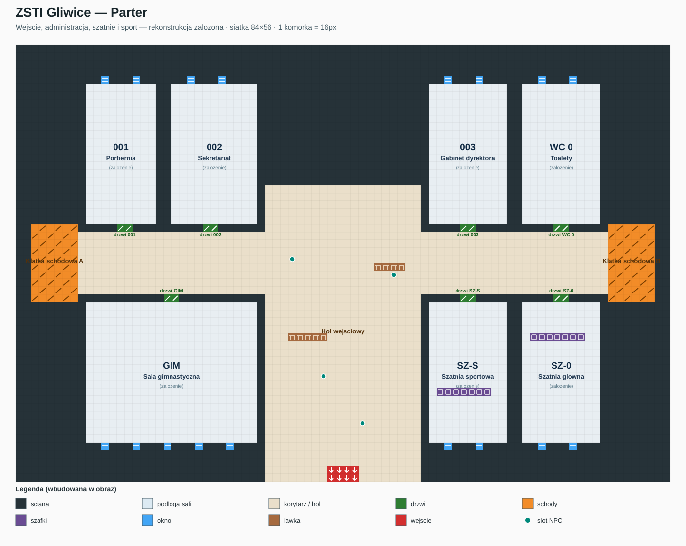
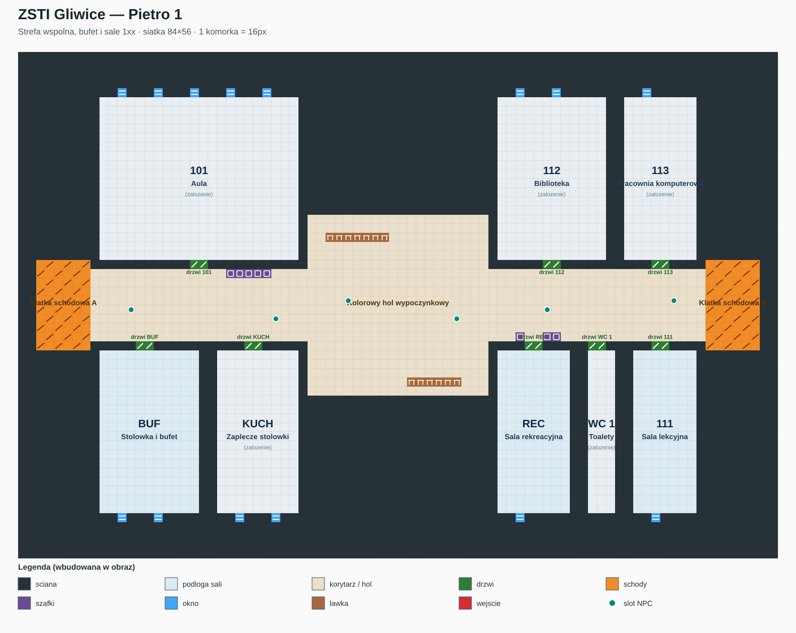
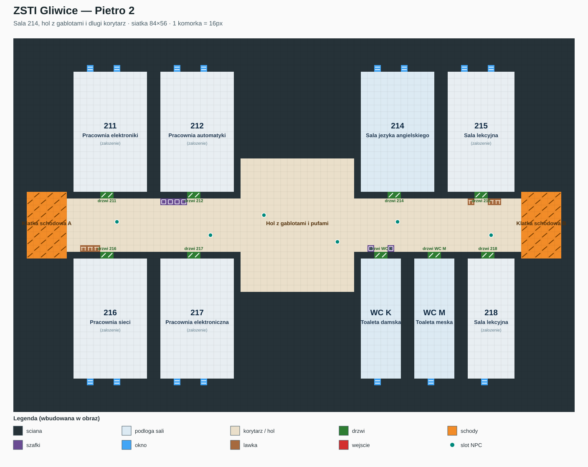
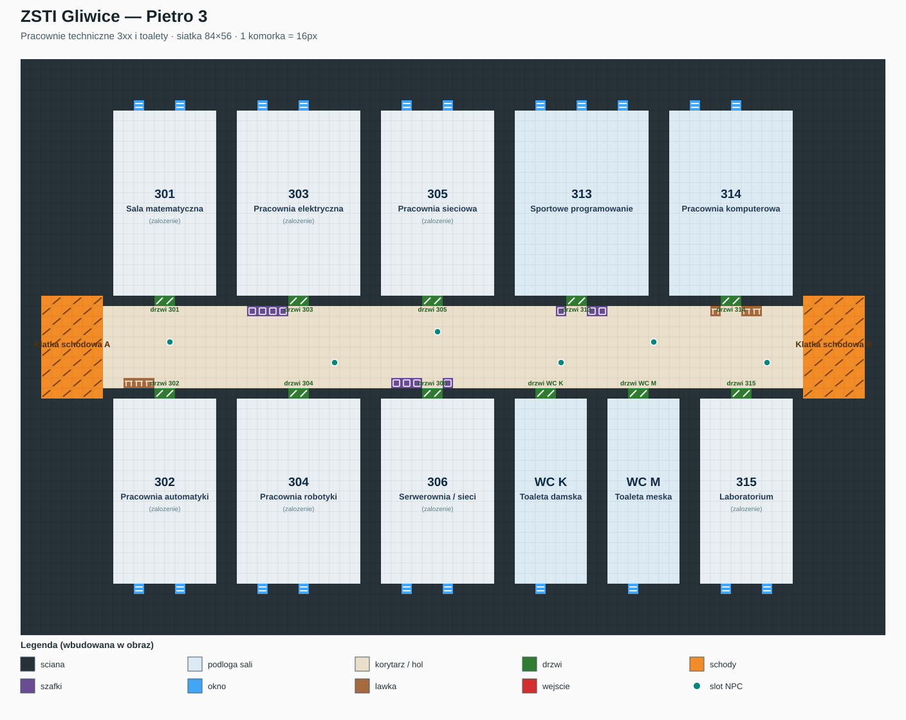

Cztery poziomy, kazdy 84×56 komorek. Plany sa rekonstrukcja projektowa ze zdjec, a nie dokumentacja budowlana ani ewakuacyjna.
Pietra 1–3 oparto na zdjeciach. Parter oraz pomieszczenia niewidoczne na zdjeciach sa jawnymi zalozeniami opisanymi w OPIS.md.
Wejscie, administracja, szatnie i sport — rekonstrukcja zalozona. Otworz SVG · Otworz PNG

Strefa wspolna, bufet i sale 1xx. Otworz SVG · Otworz PNG

Sala 214, hol z gablotami i dlugi korytarz. Otworz SVG · Otworz PNG

Pracownie techniczne 3xx i toalety. Otworz SVG · Otworz PNG
